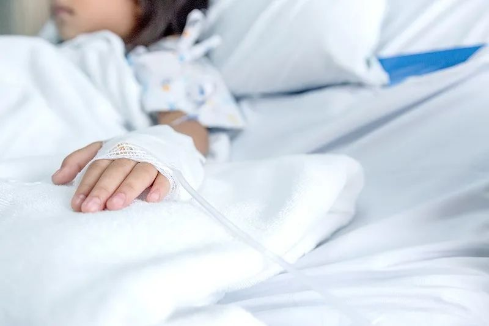
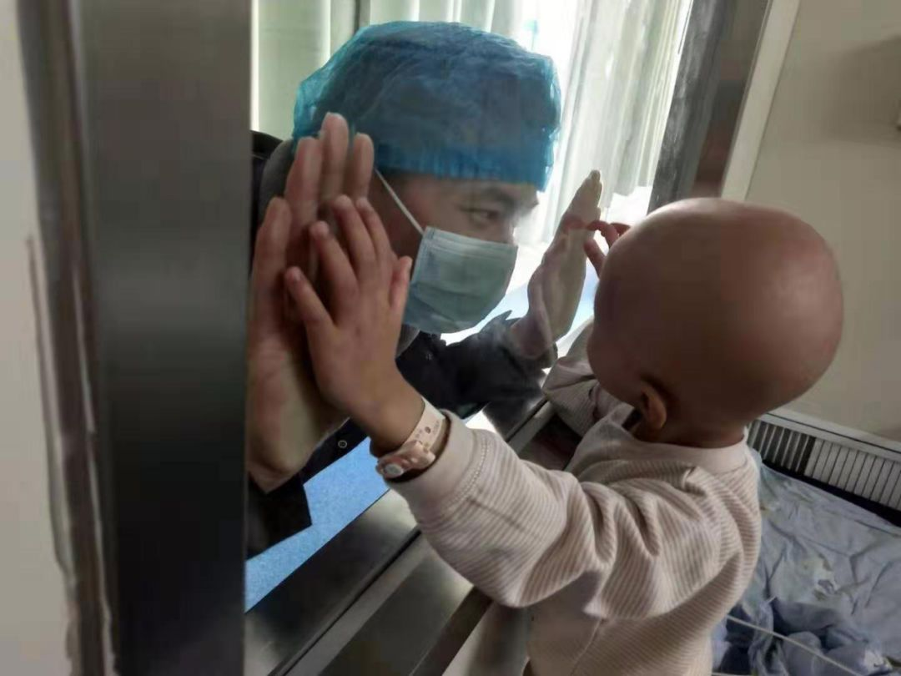
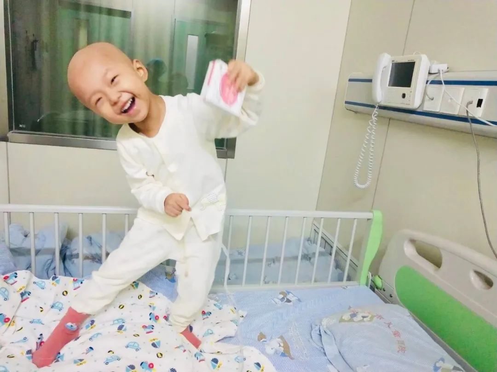
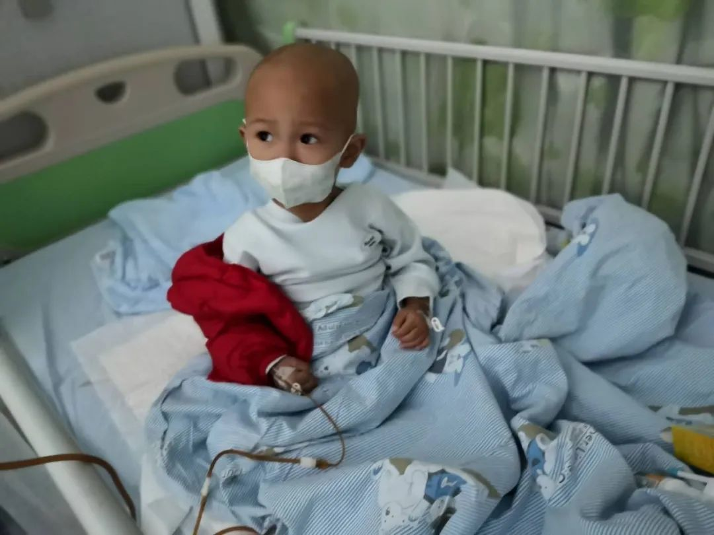
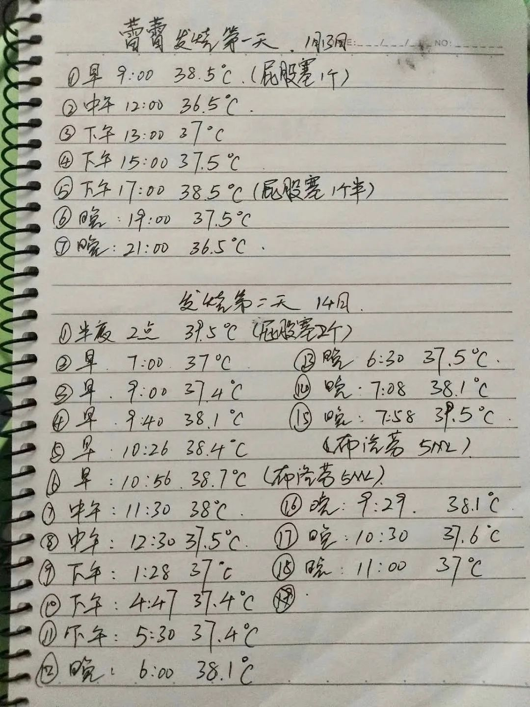
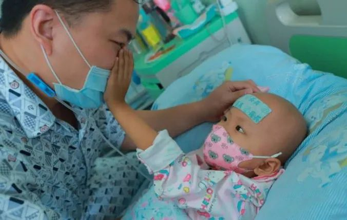

滞留湖北的5个外地人和他们的5种遭遇
原文链接 备份链接 01 泡面度日，住得提心吊胆 韩猛 | 滞留鄂州想回青岛 1月20日，我第一次和女朋友去她的鄂州老家。封城那天，我没注意到新闻。后来我租住在一个私人旅馆。当时旅馆被限制开放，外地人不予登记。我求了店主好久，最后商量成日 …

2020年1月23日，武汉封城。疫情牵动每个人，有些伤痛是刺眼的、显著的、危急的、难以忽视的，而有些伤痛则隐匿于大众视野的角落、容易被忽略，但却渗透在受伤群体的每一个生活细节中，沉默却深刻——困守在武汉的患癌儿童和他们的家庭，正在经受着这样的伤痛。
文｜罗芊
编辑｜金石
在我国，每年会有4万多名儿童患上癌症。当一个孩子确诊癌症，他的人生便开始进入闯关模式，需要多少次化疗，什么时候手术，后续还需要什么治疗，医生都会给出明晰的时间线，抗癌治疗需要连续性，如果哪个环节耽误了时间，肿瘤将面临复发风险。
2020年1月23日，武汉封城。这座城市里几乎每一个儿童癌症患儿家庭都受到了冲击。
因为疫情原因，武汉市多家三甲医院的儿科门诊都关闭了，武汉儿童医院也被设为新冠肺炎定点医院，几乎每个科室的医生都被抽调去支援抗疫，只保留了血液肿瘤科两层楼没有动。李建新是武汉儿童医院血液肿瘤科的主任医生，她这样形容这次疫情对癌症患儿的影响，「就好比打仗了，肯定是打仗的事最重要，大家都关注新冠的群体了，其他群体关注度就变少了」。
武汉儿童医院血液肿瘤科有80多张病床，几乎住满了患癌儿童，他们大多不是武汉本地人，却因封城被困在了武汉。一些需要进仓移植的患儿，因为封城后血浆、药品缺乏等问题，没法按时进仓，但也无法离开武汉去其他城市治疗；而有些移植结束的患儿，家长迟迟不敢带他们出仓，仓里有24小时空气净化装置，家长会认为那是相对安全的地方。
比起这些已经接受了治疗的孩子，那些初诊的患儿的处境更为艰难——他们刚刚确诊，正处在痛苦的发病期，还没有接受任何治疗缓解病情，家长迫切地希望孩子能尽快接受治疗，但现在武汉所有能治疗儿童肿瘤的医院都成为了新冠肺炎定点医院，带孩子去医院化疗，怕被感染，不带孩子去，有些高危的癌症患儿根本拖不起，按照患儿家属的话说，「不去那就是等死」。
谁也说不准，治疗的延缓会对患癌儿童造成多么具体的影响。癌症是一个复杂的病症，治疗是漫长的，一环连着一环，有时候就算遵医嘱按时做好每一次治疗，孩子的生命仍有可能会逝去，如果打乱了治疗计划呢？李建新说，「看每个人个体差异，有些人停半年都不复发，有些人停了一两个月就复发了」。
在儿童肿瘤病房，许多孩子都太小了，他们躺在病床上，妈妈给戴上口罩，没多会儿就开始哭闹，把口罩扯下来玩。这些孩子看起来和其他的孩子并没有太多不同，因为不常出门，他们皮肤会白一些，通常都是小光头，他们依然很活泼，喜欢笑，会闹着要吃糍粑，要吃巧克力——他们不知道疫情有多危险，也不知道癌症意味着什么。
以下是三个被困在武汉的儿童肿瘤患儿家庭的故事，讲述这些故事的家长都提到了「难」这个字，他们上有老下有小，孩子又患上癌症，在疫情中困守武汉，「真的步步都是艰难的」。
1
荆州人付小平身上带着一股乐观劲儿。两年前，她的女儿「小橙子」才1岁7个月，就确诊了神经母细胞瘤，幸好，是低危的，医生说，这种病的临床治愈率很高，很少有死亡病例，和许多病友比起来，她甚至觉得自己很幸运。
她带着小橙子做了8次化疗，每隔三个月来武汉复查一次，她还记得第一次来复查，听病友说有些孩子需要做骨髓穿刺，她问医生，「我们要不要做骨穿啊」，医生露出了一种「很好笑」的表情说，「你们做什么骨穿啊。」
后来发生的事情超出了付小平的预料，2019年8月6日，第三次复查，小橙子血项不对劲，医生给做了骨穿，她想，就算癌细胞转移到骨髓了也不要害怕，不是高危就好。结果出来，小橙子没有复发，而是又患上了急性髓系白血病，这让付小平难以接受，「我们低危的，怎么可能转白血病呢」，她想不通。
李建新说，低危神母细胞瘤继发急髓性白血病，这种状况十分罕见，是武汉儿童医院的第一例。当时，有医生跟付小平说，这个孩子还好好的，不可能抱回去就不治了，只要愿意治，医院会找方案。
小橙子开始了新一轮的抗癌治疗。经过3次化疗，2019年12月19日，小橙子进了移植仓，正常来说，小橙子1月底可以出仓，但因为膀胱炎耽误了几天，这几天，外面的疫情越来越严重，付小平很担心女儿被感染，带着她在移植仓里多住了三周，不怎么用药，一天需要花费一千多元。

小橙子在移植仓 受访者供图
作为医生，李建新并不鼓励这种做法，因为移植仓也需要正常的消毒轮转，但她也理解家长的心情——仓里是相对安全的，它封闭，有24小时空气净化系统，付小平是这样想的，「好不容易花了几十万移植，咬咬牙多住几天吧，出仓以后如果感染了，真的接受不了」。
许多肿瘤患儿家庭都在武汉儿童医院附近有个小小的出租屋，付小平家的出租屋，现在还困着小橙子的爷爷、奶奶、姐姐还有爸爸。爷爷奶奶和姐姐都是专程来武汉等小橙子出仓的，想看看她，然后就回老家，结果没想到遇到封城，一困就是一个多月。
封城后的武汉，事事都难。他们也想做防护，在网上买防护服，十几天不发货，最后商家主动退款了，给孩子买消毒柜，也不发货，护目镜没有，口罩更不用说。付小平一边担心老人和大女儿，一边担心小橙子的爸爸每天去医院送饭，「如果带了什么病毒回去，全家都完蛋了」。
超市十点开门，人多的时候，小橙子的爸爸不敢去排队，怕感染到病毒，但等到人少的时候去，又抢不到便宜菜。他们家里的政策是，大人多吃蔬菜，做点肉丸子汤，留给小橙子吃。
更令付小平烦恼的是，医生说，小橙子的移植效果不理想，病友圈里有句话说，「移植有价，排异无价」。但她鲜少抱怨，和《人物》记者交谈时，她没有强调自己经济上有多困难，她只说，「这一大家人，生活开支，真是不好搞。」一份募捐信息显示，她来自农村，生大女儿怀孕八个月时，丈夫入狱，被判刑8年。她为小橙子做了干细胞移植，移植两天后就进仓照顾孩子。
谈到孩子，她没有唉声叹气，也没有哭，语气中甚至透露出一种欣慰。小橙子一直很坚强、乐观、活泼，除非是极不舒服，才会躺在床上，只要稍微有精神，「就感觉和正常孩子一样」。因为从小生病，她甚至比大人都要坚强，痛的时候会哭，但是痛过了，就忘记了。一岁多的时候，每次化疗结束去医院查手指血，她都会乖乖戴上口罩，如果付小平忘记了，她会跟妈妈说，「妈妈，口罩忘记拿了」。
在移植仓的后期，小橙子得了膀胱炎，总是尿裤子，有一天尿湿了四条，付小平给她换裤子时说了一句「都快没裤子换了」，小橙子点了点头，说，「妈妈，真的对不起。」
3岁半的小橙子很懂得表达爱，妈妈给她买了什么，她会想，以后我也要给妈妈买，妈妈对她做过什么，以后也要对妈妈做。小橙子有很多购物计划，比如，长大了要给妈妈买推车，自己的小推车是黑色的，等妈妈老了，给她买粉红色的，推着她出去晒太阳。她还对妈妈说过，要帮她冲牛奶，帮她洗手洗脚。有时候付小平看手机忙别的，小橙子会冷不丁地说，「妈妈，好喜欢你啊。」过一会儿，又会说，「妈妈，我好爱你啊。」付小平说，自己听的「心都化了」。
刚开始治疗时，付小平也曾经有过想要放弃的念头，和亲近的病友说，「如果哪一天我放弃孩子了，你们不要骂我呀，不要骂我狠心。」可真要放弃孩子，她哪里做得到，小橙子那么可爱，如果你问她，「爱爸爸还是爱妈妈」，她会伸出两个手指，「我爱爸爸妈妈，爱两个」。
在付小平的计划中，小橙子会在移植仓里住到三月底，如果疫情仍未结束，她也不知道要怎么办。她匆匆地挂了电话，因为小橙子要喝牛奶、睡午觉——这是付小平眼下最重要的事情。

开朗乐观的小橙子 受访者供图
2
赵梦烃有一张娃娃脸，她结婚早，1995年出生，孩子已经1岁零9个月了。这个新手妈妈从小没经过什么风浪，出生在湖北大冶一个村庄，嫁的人是家里介绍的，两人都没怎么出去闯过，「属于那种在家里面待惯了的人」。
她的孩子名叫陈帅，是大家庭里的长孙，生下来就很受宠爱。帅帅1岁零9个月了，话说不太圆，只会简单地叫几声「妈妈」。
今年1月18日开始，帅帅总是哭闹，家人带他去湖北大冶人民医院，住院三天，一位老医生怀疑帅帅肚子里有肿瘤，建议转院到武汉，那时武汉的疫情问题已经开始在新闻上播报，赵梦烃有些担忧，但医生说，「如果要救小孩命的话，这些都不要想，直接过去」。
当时，赵梦烃也担心过武汉的疫情问题。她问大冶的医生，「我只能转到武汉去吗？不能去其他地方吗？」医生的回答是，「可以，你到上海、北京、广州都可以」。帅帅晕车，武汉是赵梦烃最近的选择。
1月21日，没来得及买口罩，只给孩子带了几件换洗衣服、一桶奶粉、一个洗脸盆，赵梦烃和丈夫、婆婆出发了。
大冶到武汉这一路，帅帅有些脱水，到武汉儿童医院已经是下午5点，怕医生要下班回家，他们恳求医生，一定帮忙救救孩子。当天，帅帅经过腹部彩超、增强CT等检查，确诊为肝母细胞瘤。
「初诊患儿的家长是最恐惧的、最纠结的。」李建新说，「他们会觉得这个病好大好大。」25岁的赵梦烃说，知道结果的那一瞬间，她感觉「天都要塌下来了」，在她心里，自己的孩子「特别特别活泼，谁能想到他肚子里面长了一个肿瘤？」
抗癌治疗是痛苦的，因为每天打针、抽血，帅帅一见到穿白色衣服的人就害怕，他开始害怕有人摸他，夜里睡觉，妈妈想拍拍他的背哄睡，都会吓哭他。看到帅帅这样，赵梦烃也忍不住哭，医生宽慰她，「你只有照顾好自己，才能更好地照顾孩子，治疗是一个长期的过程」。
开始化疗后，帅帅的抵抗力变得很差，赵梦烃听医生说，化疗在杀死癌细胞的同时，也会把一些正常的细胞杀死，帅帅现在「就像蚂蚁一样，稍微一点点细菌病毒，都会扛不住，就像一张纸，一捅就不行」。她很小心，夜里再冷，她也不敢把穿出去过的外套盖在床上，怕帅帅被外面的细菌感染。
他们全家人都很节省，在医院的时候基本就吃一餐，一家人几乎没吃过肉，泡面和馒头轮着吃，馒头只有楼下罗森有卖，两块五一个，她嫌贵，不怎么舍得买。但是买口罩的钱她不会省。不到一个月，她买口罩就花了1000多元，帅帅的奶奶节俭，一个口罩戴两天两夜都舍不得丢，洗了以后晒干继续戴。赵梦烃会很严肃地跟她说，「你不换口罩，帅帅会把病毒、细菌都吸到嘴巴里去」，奶奶才听话地更换口罩。
如果没有封城，帅帅会在2月1日第一次化疗结束后回到湖北大冶的老家，等2月底再来化疗。出院那天，赵梦烃曾试图找一辆出租车带自己出城，结果那辆车开到一个郊外路口就让他们下车，她不肯，让对方送自己回武汉儿童医院，这样一来一回，对方收了她500多元，她很崩溃，「感觉到这里来处处被别人宰」。
由于没有找到住处，赵梦烃请求医生，能不能晚一点出院，医生帮忙推迟了两天。利用这两天，她找各种朋友帮忙，终于租到一个30平米的开间，2300元一个月，没什么像样家具，一张床、一个沙发，空调、冰箱都是坏的，孩子在房子里冻到不行，房东说，让她自己找人修，如果不愿意租，可以退租。
「真的步步都是艰难的」，她在电话那头哭了起来。
帅帅的爷爷是农民工，两年没有回来过年，今年特地回来看看孙子，现在一个人在老家，每天眼睛红红的，在家里喝酒，哭，赵梦烃不敢给帅帅爷爷打电话，讲一次爷爷哭一次，她心里面也疼。
出院后，帅帅爸爸负责买菜，每次回来，赵梦烃说自己，「就跟神经一样」，拿消毒水喷丈夫，用湿纸巾擦擦擦，衣服鞋子都放到外面去晒。她甚至害怕一家四口人在这里回不去了，「感觉这个病毒比我小孩的病还恐怖」。
有一天，帅帅的爸爸忽然说肚子痛，她以为感染了新冠肺炎，如果真是那样，她甚至想，「干脆抱着孩子从医院楼顶上跳下去算了」。有段时间，她甚至感觉自己得了新冠肺炎，头痛、嗓子痛、全身乏力，她说，从来到武汉到现在，「一直都是崩溃的」。
前些天，帅帅爸爸终于买到了排骨，她焯好水，分成好几份，拿出一份在电饭煲炖了很久，加了红枣枸杞，汤甜甜的，帅帅很喜欢，他吃得好才有力量。
肝母细胞瘤是儿童常见的肝脏恶性肿瘤，国内的总体治愈率可以达到72%，只是治疗费用昂贵，「可能要60到80万。」赵梦烃说。
很多人曾劝她放弃， 「你们还年轻，还可以再生。」但她从没想过放弃。她的想法很朴素，就像每一个妈妈那样——「他是我第一个孩子，是我身上掉下来的肉，我怎么能放弃他呢？他给了我做母亲的机会，我给了他生命，我为什么要剥夺他的生命？而且肿瘤也不是他愿意长的」。
这位新手妈妈正在飞速成长，她学会收起眼泪，开始劝孩子奶奶，不要在小孩面前哭，她发现小朋友其实什么都懂，「你哭他会知道的，你一哭，他会特别暴躁，都不要你抱了」。
她面前依旧有许多困难，不久，帅帅的第二次化疗就要开始了，疫情仍未结束，帅帅的奶粉也快见底了，母婴店也没有开门，家乡的奶粉店说不能发快递，但她想，「能扛一天是一天吧，不知道以后会怎么样，且不谈以后，不知道明天会怎么样，我们现在也是走一步看一步」。

帅帅 受访者供图
3
命运给刘俊生开的玩笑有些残忍。他的母亲患有宫颈癌，父亲患有肛肠癌， 去年9月22日，他唯一的女儿蕾蕾被确诊为急性髓系白血病。
儿童白血病主要分为急性淋巴细胞白血病和急性髓系白血病，前者的患儿数量多，大约占到75%-80%，这种白血病对化疗非常敏感，化疗效果远远好于成人，而后者进行常规化疗的预后较差，需要做造血干细胞移植。
过去半年，刘俊生是家里留在武汉照顾女儿的主力，蕾蕾的妈妈在老家做收银员，只能偶尔过来帮衬——这是这个家庭唯一的收入来源。2020年1月29日，是蕾蕾妈妈计划来武汉的日子，他们要为蕾蕾进仓移植做准备。
封城突然，妻子来不及赶来，刘俊生只能一个人带着蕾蕾准备移植。更糟糕的消息是，由于封城造成的交通不畅，医院没办法保证移植所需的药品、血浆和血小板，蕾蕾迟迟无法进仓移植，只能先吃化疗药物维持——因为无法保证正常的移植条件，封城后，武汉儿童医院几乎所有需要进仓移植的患儿都推迟了移植时间。
等待移植的期间，蕾蕾也无法接受正常剂量的化疗——急性髓系白血病的化疗用药量大，患儿用药后免疫力会变得极低，非常容易感染，由于疫情的原因，医生将用药力度减轻了，李建新说：「疫情期间，医生会权衡，肯定不会打很强烈的化疗，会在安全前提下稍微折中一下」。
就这样，蕾蕾只能住在医院，一边接受维持化疗，一边等待移植。由于武汉儿童医院成为新冠肺炎定点医院，为了保护患儿减少感染，医院规定，一位患儿只能留一位成人看护，其余家属全部回家，送饭的话只能送到固定地点。其他孩子大多都有两位家属在武汉，一人陪护，一人做饭送饭，但刘俊生只有一个人，他没得选择，只能每天给蕾蕾吃医院的盒饭。

化疗后，刘俊生会详细地记录蕾蕾的体温 受访者供图
从前，他虽然也时常一个人照顾蕾蕾，但可以医院出租屋两头跑。他照顾孩子十分精细，癌症患儿要吃得新鲜健康，牛奶喝的是低脂牛奶，肉类是市场买的新鲜肉，他两三天逛一次菜场，吃饭的时候蕾蕾先吃，他吃剩的。
他的全部时间都在为蕾蕾服务——夜里在医院陪着蕾蕾，早上6点起来，从医院走回出租屋，给蕾蕾炖粥，蒸红糖馒头，煮鸡蛋，8点送到医院，喊蕾蕾起床，擦脸，喂早饭，蕾蕾吃饱后，他会跟医生确定当天需要输的药物，再返回出租屋，开始洗菜，菜洗好后，他会用干净毛巾擦一遍，再择好切好，用温热的水泡着，然后回医院陪女儿。等到中午11点多，他再回去炒菜，并且把晚上的菜准备好，也用温水泡着，等晚上回来炒，「每天反复这个程序」。
每一餐，刘俊生会炒2个菜，因为蕾蕾不能吃剩菜，他每个菜的菜量都很少，也不放什么调味品，就加点盐。有时候他也觉得挺辛苦的，一直往返在医院和出租屋，但能保证孩子体重不下降，他觉得值。
医院的盒饭显然无法达到这个水准——25元一份，刘俊生说，蔬菜居多，土豆、白菜、萝卜、豆角，偶尔能见到一些细碎的肉片，刘俊生不埋怨医院，他说，「可能因为病毒原因吧，现在医院的肉也紧张，我都理解。」令他难受的是蕾蕾的身体，以前，每隔两三天他都会给蕾蕾炖排骨汤，现在蕾蕾吃不上肉，营养跟不上，免疫力很低，他去求助医生，能不能让食堂给孩子单独做点排骨，他愿意付钱，医院表示，很难为一个孩子去开这个先例。
他本想求助病友，能不能给孩子做点排骨汤，发现病友自家孩子都吃不上几回排骨——现在排骨不好买。有时候刘俊生也想，要不硬闯出去买菜做了送来，但他的良心又过不去，万一出去买菜身上带病毒了，把大家感染了，也太自私了，「不能因为你孩子，不顾别人了」。
住院的一个月，蕾蕾唯一一次喝上排骨汤是因为外卖。那些天，刘俊生总是抱着希望点开外卖APP，看到的总是烧烤，他不需要烧烤，他只想要排骨汤，好不容易有一天，他翻手机，见到一份排骨炖海带，只有一份了，标价48元，他马上下单，给店家打电话叮嘱，「我孩子是白血病，不希望你给我做的多么好，只要干净就行，放点盐就可以了」。
外卖到了医院，没法儿送上来，他央求外卖员把电话给保安，他跟保安说明了情况，保安破例帮他送到了电梯口。电梯口的门是锁着的，只有一个30厘米左右的缝隙留给病人送饭，保安捧着排骨汤，越过那个缝隙，递给他，那天，蕾蕾把海带、排骨、汤全吃光了，她太久没有吃到肉了。
前些天，蕾蕾的身体指标终于达标，可以暂时出院了，刘俊生想，「总算熬到头了」，但新的问题又来了，他不敢出门买菜，他怕出门染上病毒，更不放心蕾蕾一个人在家。
「孩子刚刚出院，她现在走路都费劲，她很虚弱，她今年6岁，现在体重不到30斤，瘦的几乎就是跟面条似的。你想象一个女孩，将近1米1的身高，体重30斤不到，今年6岁了。」他如此描述孩子的状况。
刚出院那两天，家里没有新鲜蔬菜，刘俊生只能变着花样给蕾蕾做鸡蛋，早上是煮鸡蛋，中午摊鸡蛋饼，第二天早上煎的荷包蛋，中午又摊的鸡蛋饼。后来，他加入了小区的买菜群，和大家一起团购菜，他说明了自己的情况，拜托采购的人帮忙把菜送到门口。
群里一位同小区的武汉大姐加他微信，说，「我家里做了点排骨炖山药，给你送过去。」他收到的那份排骨炖山药，满满一大盒，里面有十多块排骨。刘俊生感动极了，他知道现在买排骨有多难，他原以为，这位大姐只是家里做了汤，给蕾蕾匀一碗，没想到她专门给蕾蕾炖了一锅汤，炖到半夜两点钟，除了排骨汤，她还送来了蕾蕾爱吃的葡萄干、饼干和零食。
刘俊生说，他是一个挺感性的人，看电影很容易流眼泪，蕾蕾刚确诊的时候，头发都剃光了，洗澡的时候瘦得像火柴棍似的，他看到蕾蕾化疗前的照片，几乎每天都要偷偷流眼泪。现在他不这样了，「我的眼泪都流干了，」他说，他不能哭，还要在蕾蕾面前笑，要让孩子快乐。「可能你听我说话的口气，感觉挺轻松，只有事情真正到自己身上的时候，你没办法，只能去面对」。
他对《人物》记者说，「我必须要照顾好她，因为她是我的，可以说唯一，我只有这一个孩子，我不能失去她」。
他觉得自己的孩子已经很坚强了。在医院，医生都夸蕾蕾，体质不错，髓系白血病化疗药物用得重，副作用大，身体扛不住就需要很多后续支持治疗，有些病友一个疗程花十五、六万，但蕾蕾前两个疗程的费用都没有超过10万元，她吃到了好吃的就很活泼，医生说，「瞧着也不像得白血病的孩子」，刘俊生听到这句话笑了，他多希望这句话是真的，他还会开玩笑地问医生，「你说会不会是咱医院诊断错误了？」
采访这天，刘俊生终于收到了团购的蔬菜套餐，里面有蕾蕾爱吃的红心红薯和豌豆，他准备素炒豌豆，给蕾蕾蒸红薯，他希望下一次能买到蕾蕾最爱吃的香菇，等团购的肉到了，给她做香菇炒肉。
但眼下，刘俊生最焦心的还是蕾蕾什么时候能够进仓移植，每拖一天，他就更加忧虑。他接连说了很多句「没办法」，好像这样能带给自己一些安慰，「这个病（新冠肺炎）真坑了很多人，但是也没办法，既然已经发生了，只能大家一起克服」。
2月24日，武汉市曾发布通告，称将为特定人群打开离汉通道，其中就包括身患疾病需要去外地治疗的人，刘俊生没有看到这则新闻，当天下午，武汉市新冠肺炎疫情防控指挥部发布消息：放开离汉通道的通告无效。
刘俊生说，如果可以离开武汉，他一定会带着蕾蕾去别的城市看病，「不能再这么拖下去了」。

蕾蕾 受访者供图
（特别感谢向日葵儿童癌症公益项目对本次采访的倾力支持）
没看够？
长按二维码关注《人物》微信公号
更多精彩的故事在等着你

原文链接 备份链接 01 泡面度日，住得提心吊胆 韩猛 | 滞留鄂州想回青岛 1月20日，我第一次和女朋友去她的鄂州老家。封城那天，我没注意到新闻。后来我租住在一个私人旅馆。当时旅馆被限制开放，外地人不予登记。我求了店主好久，最后商量成日 …
原文链接 备份链接 武汉封城后，美国、日本、澳大利亚等国， 纷纷派机撤侨。 谁走、谁留？ 困扰着武汉的国际家庭。 不少家庭选择让一方带着孩子离开， 也有不少选择全家留下。 一名常住武汉的法籍医生说， “疫情期间，我在武汉能做的比在法国 …
原文链接 备份链接 文/六筒 李岩半年前刚去过武汉，和家人去旅游，主要想看看黄鹤楼。那还是夏天，热气蒸得人头上冒烟。高温挡不住蜂拥的游客，摩肩接踵，拥塞的车辆在大道上艰难挪动。“真是个大都市”，她想。 李岩是河北医科大学第二医院呼吸与危重 …
原文链接 备份链接 非常时期，武汉成了全国人民挂念、祈福的城市。封城后，武汉人民的真实生活是什么样？ 正和岛自1月26日起特别推出《叶青：我在武汉疫区的第N天》专栏。叶青是一位定居武汉40年的市民，也是一名学者和官员。接下来的一段时间，他 …
原文链接 备份链接 3月18日。 封城第56天。 大晴，太阳太明亮，一副直奔夏天的感觉。有阳光，而不潮湿，这是武汉很舒服的天气。其实我之喜欢武汉，气候也是很重要的原因。武汉四季分明，每个季节都有自己的个性。用武汉人的话说，夏天热起来热死， …